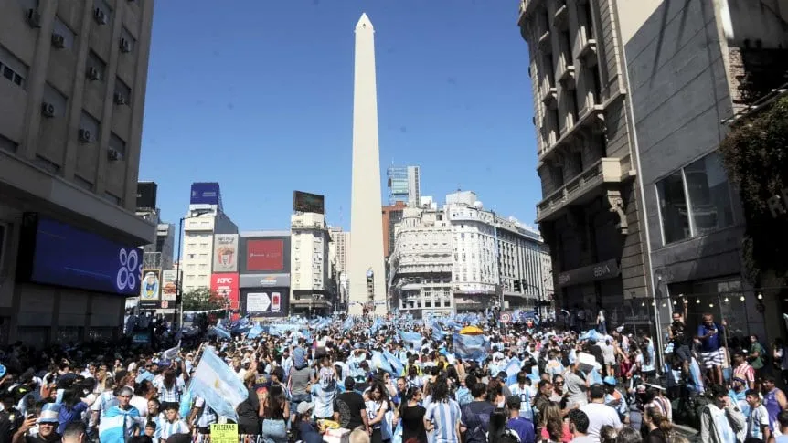
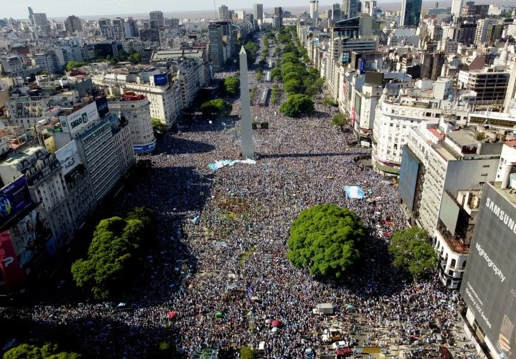

Festejos de la Selección Argentina: a qué hora llegan al Obelisco y cómo será
El plantel de la Albiceleste arribará el martes por la madrugada al país y luego de un breve descanso retomarán los festejos en la Ciudad de Buenos Aires.

Luego de haberse quedado con el Mundial de Qatar 2022, que significó la tercera Copa del Mundo de su historia, la Selección Argentina arribará al país y se espera que continúen los festejos. Los jugadores celebrarán ante una multitud en el Obelisco
Festejos de la Selección Argentina en el Obelisco: a qué hora es y cómo
El plantel albiceleste tiene previsto arribar a Ezeiza a las 2.25 de la madrugada del martes en el Airbus 330-200 que los traslada. Desde ahí la idea es ir al predio que la AFA tiene en la localidad y los futbolistas descansarán antes de retomar los festejos. El vuelo del plantel de Argentina hacia el país se puede seguir en vivo acá.
Luego de eso, se dirigirán en una caravana que partirá al mediodía rumbo al Obelisco en el que seguramente serán recibidos por una multitud y para lo cual se prepara un operativo especial de seguridad.

La Selección Argentina confirmó que los festejos serán en el Obelisco
"El plantel CAMPEÓN DEL MUNDO 🏆 partirá el martes al mediodía hacia el obelisco para festejar el título mundial con los hinchas", escribió en Twitter la cuenta oficial de la Albiceleste, junto a una foto en la que se destacan Nicolás Otamendi y Leandro Paredes. Y concluyó: "¡Sí, somos CAMPEONES DEL MUNDO! ⭐⭐⭐".